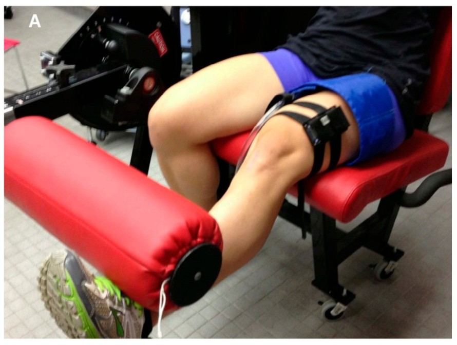
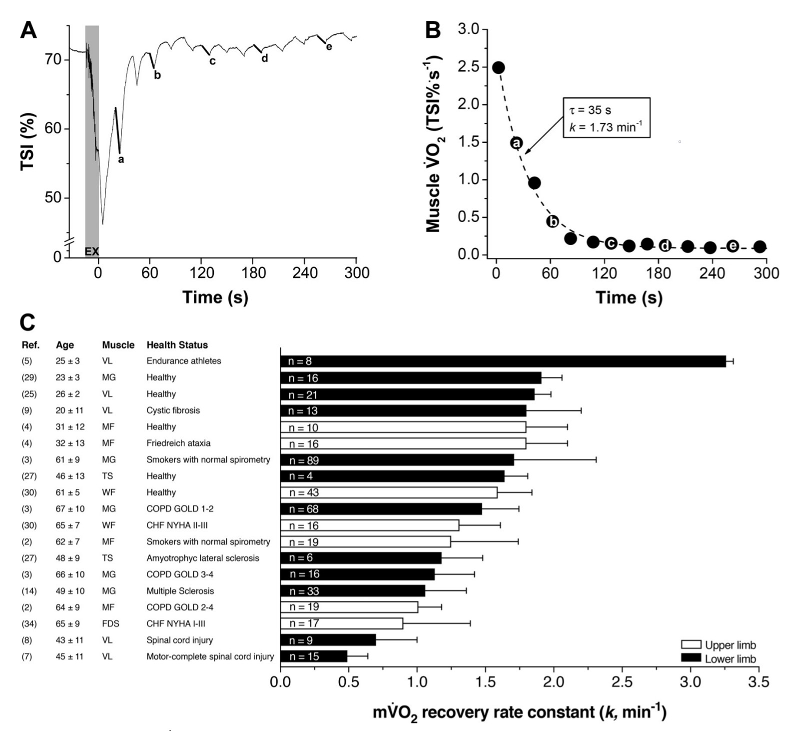

Analysing muscle oxidative capacity with mnirs
2026-09-12
Source:vignettes/articles/oxcap-analysis.qmd
Introduction
The {mnirs} package is under active development with processing and analysis methods for muscle near-infrared spectroscopy in R.
This article demonstrates recently added functionality in {mnirs} can be combined to perform muscle oxidative capacity (OxCap) analysis from a repeated ischaemic occlusion protocol, ensuring reproducibility and adhering to current gold-standard processing methods.
Note
This article assumes basic familiarity with the {mnirs} package. For an overview and demonstration of data processing with {mnirs}, please see the original package vignette Reading and Cleaning Data with mnirs.
Tip
Skip to the analysis code below if you are already familiar with the method.
Muscle oxidative capacity testing
One of the most compelling applications emerging in mNIRS research is the non-invasive evaluation of gross muscle oxidative capacity after a dynamic exercise task.
Oxidative capacity is the maximal rate at which a muscle utilises oxygen (O2) to meet the energetic demand of exercise, and is related to mitochondrial respiratory function (Beever et al., 2020).
Traditional mitochondrial oxidative capacity assessment requires invasive in-vitro methods such as high-resolution respirometry of biopsy tissue, or expensive in-vivo 31P magnetic resonance spectroscopy. mNIRS is comparatively far more accessible, and allows non-invasive assessment during dynamic exercise tasks, at lower cost and with lower participant burden.
Protocol overview
The participant performs a brief exercise task or muscle stimulation to elevate O2 extraction (mV̇O2) demand in the target tissue, with mNIRS sensors over the muscle of interest and an occlusion cuff around the proximal limb.
Immediately after the stimulus, the cuff is rapidly inflated to a supra-systolic pressure (e.g. 300 mmHg), transiently stopping blood flow into the distal target muscle. The occlusion is held briefly (e.g. 5 s) then rapidly deflated to allow recovery. A sequence of these brief, repeated occlusions are performed at a pre-specified tempo (e.g. 5-sec occlusion, 10-sec recovery) for up to twenty repetitions (~5 min), until the muscle recovers to baseline.

During each occlusion, oxygen delivery is restricted and assumed to be zero. The rate of deoxygenation — the slope of the rise in deoxy[haem] (HHb/time; μM/sec), or decline in oxygen saturation (SmO2) or oxy[haem] — is therefore interpreted as the rate of local muscle oxygen uptake (mV̇O2).
mV̇O2 is elevated immediately after the exercise task, then recovers exponentially toward baseline. The rate constant (k, min-1) of this monoexponential curve quantifies the muscle OxCap value (Adami & Rossiter, 2018).

This technique is well validated against 31P-MRS (Ryan et al., 2013) and mitochondrial content protein markers (Tripp et al., 2023). The rate constant k is proportionally higher (faster recovery) in endurance-trained muscle, and lower (slower) in untrained, older, or diseased muscle (Adami & Rossiter, 2018).
A call for standardised processing methods
Technical and analysis methods for OxCap assessment have converged toward standardisation in recent years, with good demonstrated reliability and reproducibility. There has been a recent call to implement standard analysis scripts with robust slope detection and non-linear modelling, to minimise operator-related variability between research centres, and improve interpretation of outcomes across populations and interventions (Costalat et al., 2025; Rasica et al., 2024).
This article uses recently developed {mnirs} functionality to process and analyse repeated occlusion muscle OxCap data. In the future, this could be wrapped into a single convenience function, but the current process is already considerably simpler and more robust than methods relying on manual data cleaning, manual interval selection, and iterative (e.g. Excel macro) curve fitting.
Analysis plan
For OxCap analysis, we will perform roughly 8 steps:
- Import an example mNIRS file with the repeated occlusions procedure.
- Process/clean data, as needed (minimal in this example).
- Iteratively correct NIRS values for changes in blood volume, a required step to ensure valid analysis.
- Specify occlusion events in the data and extract a 5-sec interval for each occlusion.
- Find the peak 3-sec linear regression NIRS slope within each occlusion interval.
- Fit a monoexponential curve across NIRS slope observations for both repeated occlusion trials.
- Extract the rate constant (k) for each trial exponential curve.
- Plot the modelled data.
Oxidative capacity analysis with {mnirs}
This article serves as a vignette for some of the kinetics analysis functions recently added to {mnirs}, and how they combine to perform robust OxCap analysis.
correct_blood_volume()normalises values for oxy[haem], deoxy[haem], and total[haem] channels (if present), using an iterative method developed from Beever et al. (2020) that properly accommodates negative values. See?correct_blood_volumefor details.extract_intervals()detects specific events or times in an “mnirs” data frame, extracts an interval around each one, and returns a list of data frames. The returned list of data frames is ready for further analysis. See?extract_intervalsfor details.-
analyse_kinetics()evaluates mNIRS response kinetics from a single “mnirs” data frame or a list of data frames, with a selection of parametric and non-parametric methods. It returns a formatted table of model results, with internal model components retrieved withresults$.... See?analyse_kineticsfor details.
We will use this function twice for OxCap analysis:analyse_kinetics(method = "peak_slope")finds the peak linear regression slopes on deoxy[haem] from the extracted occlusion intervals. The steepest (positive or negative) slope is often interpreted as the point of greatest mismatch between O2 supply and extraction. See?peak_slopefor details on the vector-level function called byanalyse_kinetics().analyse_kinetics(method = "monoexponential")then fits an exponential curve through the resulting slope values over time, to find the rate constant k. A self-starting functionSSmonoexponential()is fit withstats::nls(), called as either a 4-parameter model with a time-delay parameter (TD), or a reduced 3-parameter model without TD where response onset is expected to be immediate. See?monoexponentialand?SSmonoexponentialfor details.
Setup
First, load our packages and initial setup options.
Acknowledgement
I received this example file from Dr. Thomas Tripp, currently a postdoctoral fellow in Dr. Martin MacInnis’ lab at the University of Calgary. They have kindly allowed me to include this file with the {mnirs} package for users to examine themselves.
It can be accessed by calling
example_mnirs("portamon_oxcap").
Read {mnirs} data file
The included example file has three NIRS channels and a sample-number column, automatically converted to a time value by read_mnirs(). The file needs no other pre-processing steps.
Note: by default, Artinis Oxysoft exports an event label column without a named header. read_mnirs() renames this to “labels”. This is the column we will use to identify occlusion events by the label “Occlusion”.
## identify and rename channels, including the event label column
df <- read_mnirs(
file_path = example_mnirs("portamon_oxcap.xlsx"),
nirs_channels = c(thb = 2, hhb = 3, o2hb = 4),
event_channel = c(event = "labels")
)
## view the structure of our data frame
df#> # A tibble: 7,944 × 6
#> time sample event thb hhb o2hb
#> <dbl> <dbl> <chr> <dbl> <dbl> <dbl>
#> 1 0 0 <NA> 146. 63.0 82.9
#> 2 0.1 1 <NA> 146. 63.0 82.8
#> 3 0.2 2 <NA> 146. 63.0 82.8
#> 4 0.3 3 <NA> 146. 63.0 82.9
#> 5 0.4 4 <NA> 146. 63.0 82.7
#> 6 0.5 5 <NA> 146. 62.9 82.6
#> 7 0.6 6 <NA> 146. 62.9 82.7
#> 8 0.7 7 <NA> 146. 62.9 82.8
#> 9 0.8 8 <NA> 146. 62.9 82.7
#> 10 0.9 9 <NA> 146. 62.9 82.7
#> # ℹ 7,934 more rows
## plot the two trial start events
trial_times <- df$time[grepl("Trial Start", df$event)]
plot(df, label_time = TRUE) +
geom_vline(xintercept = trial_times, linetype = "dashed")
The two repeated occlusion trials are clearly identifiable from the raw data plot. A few resting occlusions were also performed at the start of the file, which we will ignore for now.
Correct for blood volume
Before analysing the OxCap trials, the NIRS channels must be corrected for changes in blood volume during the repeated occlusions. This ensures validity when evaluating NIRS slopes (Ryan et al., 2012).
The preferred method proposed by Beever et al. (2020) iteratively corrects for instantaneous changes in oxygenation between samples. correct_blood_volume() implements this method, further developed to accommodate negative NIRS values, which can be reported by some mNIRS devices.
correct_blood_volume()
-
dataThis function takes a data frame (or a list of data frames), corrects the specified NIRS channels for changes in blood volume (Δtotal[haem]), and returns the data frame with the corrected
nirs_channels.
These channels cannot be read automatically from “mnirs” metadata, to avoid ambiguity. The corrected channels are passed on in metadata asnirs_channelsfor further analysis.
df <- df |>
correct_blood_volume(
oxy_channel = o2hb,
deoxy_channel = hhb,
total_channel = thb
)
## plot corrected data with occlusion event indicators
occl_times <- df$time[grepl("Occlusion", df$event)]
plot(df, label_time = TRUE) +
geom_vline(xintercept = occl_times, linetype = "dotted", alpha = 0.4)
This correction results in a symmetrical distribution of oxy- and deoxy[haem], with the sum total (total[haem]; THb) definitionally equal to zero at all samples.
Occlusions from the labels in event_channel are also plotted (vertical dotted lines) to visually confirm timing and detect any erroneous events.
Extract occlusion intervals
The next step is to detect and extract each interval around these occlusion event labels into a data frame for iterative kinetics analysis. We will also need to split the analysis into the two discrete trials.
extract_intervals()
-
dataThis function takes a data frame or list of data frames, and returns a list of data frames, named per detected interval. “mnirs” metadata is passed to and from this function.
-
nirs_channels,time_channel,event_channel, &sample_rateSpecify which column names in
datawill be processed.nirs_channelsare the response variables;time_channelis the predictor variable;event_channelspecifies where to look for events as either character labels or integer laps; andsample_ratecarries the exported samples-per-second rate used when ensemble-averaging across intervals. Arguments left unspecified are retrieved from “mnirs” metadata by default.
We will analyse OxCap from the deoxy[haem] (“HHb”) NIRS signal, as recommended (Costalat et al., 2025). -
start&endInterval boundaries are specified using helper functions:
by_time()fortime_channelvalues;by_label()forevent_channellabels;by_lap()for lap indices inevent_channel; orby_sample()for sample indices (row numbers). Provide bothstartandendto define precise intervals, orstartalone withspanto extract a window around events (see below).
Since the occlusions are all identified by the event label “Occlusion”, we can look for this string as thestartvalue to extract each interval.
Event labels are matched as regular expressions (regex) by default, so a partial string will match. Usefixed = TRUEfor literal matching, orignore_case = TRUEto match case-insensitively. -
group_intervalsMultiple events can be extracted for analysis as “distinct” intervals, or “ensemble”-averaged together. Different groupings can be ensemble-averaged by providing a list of intervals by number, e.g.
list(c(1, 2), c(3, 4)).
For manual grouping, interval numbers must be known ahead of time and always refer to order of occurrence in the data frame (sorted bytime_channel). For this example, we analyse each interval separately using the defaultgroup_intervals = "distinct". -
spanA two-element vector of
time_channelvalues specifying a time windowc(start, end)in units oftime_channel, where positive values indicate time after the event bound and negative values indicate time before.span[1]shifts the start bound,span[2]shifts the end bound, respectively.
Since all occlusion bouts were held for 5 s, we use a 5-sec time span. If occlusion duration changed through the protocol, we could specify a list of time spans (span = list()); here a single vector is recycled.
Visual inspection (not shown) revealed that the deoxy[haem] signal was disrupted by cuff inflation during the first 0.5-1.0 sec of each occlusion interval, which might influence slope values. We therefore exclude the first second withspan = c(1, 5), i.e. extract from 1-sec to 5-sec after each “Occlusion” label. -
zero_timeTime values for each event interval can be recalculated to start from zero at the event indicator. Ensemble-averaged intervals are always rebased to zero, since original time values are obsolete when ensembling.
For repeated occlusion testing, the original time information per interval is needed to subsequently model the exponential recovery function, so we keepzero_time = FALSE.
## extract all occlusion events from the data at once
## we can specify the two-trial structure later
## extract intervals in a 1-5 sec span after each event
df_list <- extract_intervals(
df,
group_intervals = "distinct",
start = by_label("Occlusion"),
span = c(1, 5), ## span in reference to `start` times
zero_time = FALSE ## preserve original time values
)
## visualise all occlusion intervals for error checking
## expecting 2 x 16 = 32 total
plot(df_list, ncol = 8) +
theme(axis.text.x = element_blank(), axis.ticks.x = element_blank())
As expected, on visual inspection the first intervals in each repeated occlusion trial (interval_1 and interval_17) are the steepest, becoming progressively less steep at each subsequent occlusion as mV̇O2 recovers.
Next, we calculate the slope value for each occlusion interval.
Calculate occlusion slopes
analyse_kinetics()
-
dataThis function takes a data frame or list of data frames, analyses all channels separately, and returns a single formatted table of results. Model components such as coefficients, fitted data frames, intake metadata, and diagnostics can be retrieved from results metadata with
results$.... -
nirs_channels&time_channelIf the data contain “mnirs” metadata, these are detected automatically; otherwise they can be specified explicitly.
-
start_time,direction, &end_windowThese arguments apply to every method.
start_timemarks the response onset. When intervals come fromextract_intervals(), it is retrieved automatically from “mnirs” metadata. Otherwise it defaults to the first non-negative time value (i.e.0).directiondetects whether the response rises (“positive”) or falls (“negative”), and defaults to “auto”. For parametric fits it also constrains the expected response direction, in case of ambiguous kinetics. For deoxy[haem], we specifydirection = "positive", since deoxygenation increases during occlusions.end_windowdefines the end of the fitting window by looking forward for a reasonable end time, taking the first peak or trough (for rising or falling response, respectively) with no more extreme value within that span. The defaultend_window = Infuses the global extreme across the whole interval, appropriate for these short occlusion windows. -
methodMultiple analysis methods are currently available. This OxCap analysis uses “peak_slope” and “monoexponential”, then “exponential_drift” as an exploratory extension below.
Analyse peak slope kinetics
method = "peak_slope"
The peak slope method is a semi-parametric approach: it fits a linear regression model across a rolling local window, returning the single steepest slope along with the time at which it occurs. For OxCap analysis, the steepest local rate of deoxygenation is interpreted as the point of greatest mismatch between O2 delivery and extraction — a proxy for mV̇O2 during each occlusion.
-
width,spanThe local window is specified by either
width(a number of samples) orspan(a range of time in units oftime_channel). Here we want the peak slope from a 3-sec span within each occlusion interval. -
alignThe window can be “centre”-aligned around the target sample (
idx), “left”-aligned withidxat the start (forward-looking), or “right”-aligned withidxat the end (backward-looking). We keep the defaultalign = "centre". -
partialBy default, a local window only returns a linear regression model if all samples within it are valid. If
partial = TRUE, windows return a slope model as long as two or more samples are available.
Windows with fewer samples tend to return steeper slopes, which may not be relevant to our interpretation — e.g. at the edges of a noisy dataset, two samples alone can produce an extreme local slope that we would usually want to ignore.
## find peak 3-sec hhb slopes within each occlusion interval
slope_results <- analyse_kinetics(
df_list,
nirs_channels = hhb,
time_channel = time,
method = "peak_slope",
span = 3,
direction = "positive",
partial = FALSE,
)
## view the formatted results
slope_results#>
#> Peak Linear Response Rate
#> Model Coefficients:
#> interval nirs_channels start_time slope intercept peak_slope_time
#> 1: interval_1 hhb 213.7 1.044 -1.505 1.2
#> 2: interval_2 hhb 228.5 0.6122 -0.1580 1.2
#> 3: interval_3 hhb 243.4 0.3869 -0.7273 2.8
#> 4: interval_4 hhb 258.4 0.3275 -1.877 2.8
#> 5: interval_5 hhb 273.6 0.1902 -1.094 2.8
#> --- 22 rows omitted
#> 28: interval_28 hhb 722.0 0.2043 -2.208 2.1
#> 29: interval_29 hhb 736.7 0.1902 -2.110 2.8
#> 30: interval_30 hhb 751.5 0.1968 -4.253 2.8
#> 31: interval_31 hhb 766.7 0.2230 -4.138 1.8
#> 32: interval_32 hhb 781.3 0.1925 -3.602 2.7
plot(slope_results, ncol = 8, label_size = 3) +
theme(axis.text.x = element_blank(), axis.ticks.x = element_blank())
Tip
Individual kinetics results can be quickly visualised with the built-in
plot()function with coefficient labels (see?plot.mnirs_kinetics).
Next, we can recursively analyse the resulting slope coefficients with another analyse_kinetics() call using a “monoexponential” model to estimate mV̇O2 recovery.
Model mV̇O2 recovery
analyse_kinetics()
Analyse monoexponential kinetics
method = "monoexponential"
The monoexponential method is a parametric approach: it fits a self-starting exponential curve to time series data with stats::nls(), using SSmonoexponential() to initialise starting values. This models how mV̇O2 recovers back to baseline after the exercise stimulus, and its rate constant k is the OxCap outcome.
It fits either a 4-parameter model A + (B − A)(1 − exp(−(t − TD) / tau)) with a time delay TD, or a reduced 3-parameter model without TD when the response is expected to start immediately.
-
use_TD(TD coefficient)An argument used with the exponential methods: it explicitly specifies a 4-parameter model with a time delay between the stimulus (e.g. at
t = 0) and the start of a systematic exponential response. The model falls back to a 3-parameter fit if the 4-parameter fit fails to converge.
During repeated occlusions after exercise, the first occlusions may not conform to an exponential response, i.e. if oxygen saturation is too low and limiting to mV̇O2. A time delay parameter can capture the true monoexponential response in these cases. This protocol was designed to avoid that delay, so TD is not required here. -
A, B coefficients
The starting (baseline) and ending (asymptote) values of the monoexponential curve, defining either exponential association (positive direction, B > A) or decay (negative direction, A > B).
-
tau, k coefficients
The time constant (tau; τ) describes the time (speed) of the exponential response from A to B, approximated by the time elapsed at 63.2% of the total response amplitude — i.e. when predicted
yequalsA + 0.632 × (B − A).
The rate constant (k) is the inverse of the time constant (k = 1 / tau) and is also commonly used in NIRS research. k is returned as the inverse oftime_channelunits (seconds) by default; here we convert k to min-1. -
group_intervals&zero_timeNote these arguments differ slightly in intent from their
extract_intervals()counterparts above. Here,group_intervalstakes a list of sample (row) numbers, processing each as separate intervals and returning named groups as interval names. The default “ensemble” fits all samples of each data frame together, as in the abovemethod = "peak_slope"example.
Ourslope_resultshas one sample per occlusion, solist(trial1 = 1:16, trial2 = 17:32)separates the two trials. As withextract_intervals()above,zero_timeis used to rebase each trial to start from0.
## use 3-param monoexponential model without TD
## fit samples in sequence grouped by trial
## channels must be specified explicitly
monoexp_results <- analyse_kinetics(
slope_results,
nirs_channels = slope, ## supply predictor & response channels
time_channel = peak_slope_time,
method = "monoexponential",
use_TD = FALSE,
group_intervals = list(trial1 = 1:16, trial2 = 17:32),
zero_time = TRUE ## rebase each trial start_time to zero
)
## view the formatted results
monoexp_results#>
#> Monoexponential One-Phase Kinetics
#> Model Coefficients:
#> interval nirs_channels A B TD tau k MRT
#> 1 trial1 hhb_slope 1.051 0.2104 NA 19.33 0.05174 19.33
#> 2 trial2 hhb_slope 1.034 0.1666 NA 15.39 0.06496 15.39Resulting coefficients A represents the peak observed mV̇O2 value at time = 0, and B represents the asymptote resting mV̇O2 value. tau and k are the time and rate constants explained above. Since there is no TD, MRT (mean response time; the sum of tau + TD) is redundant with tau. HRT (half-response time) is also reported.
The default plot of “mnirs_kinetics” data only reports tau (and TD & MRT if relevant). We want to know both tau and k in min-1, so we will replace the default with a custom label for our results plot.
We can plot our results with some built-in customisation arguments, and additional components built from ggplot2.
## add custom info to the plot
plot(monoexp_results, time_labels = TRUE, points = TRUE, labels = FALSE) +
labs(
x = "Occlusion Times (mm:ss)",
y = expression(bold(HHb ~ Slope ~ '(' * μM %.% sec^'-1' * ')')),
) +
theme(legend.position = "none") +
geom_text(
data = coef_labels, aes(label = label),
x = Inf, y = Inf, size = 5, hjust = 1.1, vjust = 1.3
)
As a final validation step, we can examine the fitting diagnostics for the two trials.
Examine fit diagnostics
## call diagnostics and format sigfigs
monoexp_results$diagnostics |>
mutate(across(where(is.numeric), \(x) signif(x, 3)))#> interval nirs_channels n_obs n_params r2 adj_r2 rmse cv_rmse snr aic
#> 1 trial1 hhb_slope 16 3 0.967 0.962 0.0397 0.130 14.9 -49.8
#> 2 trial2 hhb_slope 16 3 0.975 0.971 0.0343 0.137 16.1 -54.5
#> aicc bic
#> 1 -46.2 -46.7
#> 2 -50.8 -51.4The diagnostics are already strong, suggesting valid monoexponential fit. However, we might wonder whether the upward drift in slope values rather than a flat asymptote is physiologically meaningful.
For that, we could use an exploratory third analyse_kinetics() method:
analyse_kinetics()
Analyse exponential-drift kinetics
method = "exponential_drift"
The exponential-drift method is a parametric two-phase approach: it fits a monoexponential primary response with a secondary linear drift beginning near the primary asymptote, with stats::nls() and SSexponential_drift(). A, B, tau, and the derived k, MRT, and HRT are interpreted the same as for “monoexponential” above. The additional slope coefficient is the linear drift rate (in response units per unit time_channel).
It fits a 5-parameter model A + (B − A)(1 − exp(−t / tau)) + slope × max(t + tau × log(1 − drift_fraction), 0), or a 6-parameter model adding a time delay TD.
A slow drift in mV̇O2 after the primary recovery is physiologically plausible, e.g. from post-occlusion reactive hyperaemia or a slow-component shift in resting metabolic demand. Separating it from the primary response means the exponential phase is no longer forced to absorb the drift into its asymptote. See ?exponential_drift and ?SSexponential_drift for details.
-
drift_fraction(determines where the drift begins)The drift onset occurs where the primary response reaches the specified fraction of its amplitude,
TD − tau × log(1 − drift_fraction). Before the onset, the drift term is considered to be zero. The reported excursion point texc is where the secondary drift rate overtakes the decaying primary rate (the turning point of the curve when the two phases oppose).
The defaultdrift_fraction = 0.95places drift onset at 95% of the primary amplitude (3 × tau after TD), i.e. where the primary response is effectively complete. It can be manually adjusted, but smaller fractions allow the drift response to encroach on and absorb more of the primary response, biasing the more physiologically relevant tau estimate. We will leave it at the default.
Caution
Please note! Exponential-drift kinetics is currently experimental based on empirical observation, and remains to be more rigorously validated.
exp_drift_results <- analyse_kinetics(
slope_results,
nirs_channels = slope,
time_channel = peak_slope_time,
method = "exponential_drift",
use_TD = FALSE,
drift_fraction = 0.95,
group_intervals = list(trial1 = 1:16, trial2 = 17:32),
zero_time = TRUE
)
## view the formatted results
exp_drift_results#>
#> Exponential-Linear Drift Two-Phase Kinetics
#> Model Coefficients:
#> interval nirs_channels model A B TD tau k MRT
#> 1 trial1 hhb_slope exponential_drift 1.038 0.1383 NA 24.57 0.04069 24.57
#> 2 trial2 hhb_slope exponential_drift 1.028 0.09962 NA 19.02 0.05257 19.02
#> texc slope_B
#> 1 91.71 0.0008767
#> 2 79.65 0.0007414We will plot the new results using default labels, and displaying the two-phase components with a hidden (undocumented) option.
plot(
exp_drift_results,
time_labels = TRUE,
points = TRUE,
label_size = 5,
components = TRUE
) +
labs(
x = "Occlusion Times (mm:ss)",
y = expression(bold(HHb ~ Slope ~ '(' * μM %.% sec^'-1' * ')')),
) +
theme(legend.position = "none")
Time constant (tau) values are each ~5-sec greater with the two-phase exponential-drift kinetics, implying the fast primary monoexponential response can be described as proceeding more gradually toward a lower asymptote than initially observed, hidden behind a moderate slower hyperaemic drift.
We can evaluate the fit diagnostics for this advanced kinetics fit, however we should be cautious directly comparing the diagnostic values without first considering n_obs and n_params; which reports the number of samples (observations) and coefficients (parameters) used by each model.
## bind both fit diagnostics into a single comparison table
## compare by trial
bind_rows(
monoexponential = monoexp_results$diagnostics,
exponential_drift = exp_drift_results$diagnostics,
.id = "model"
) |>
arrange(interval) |>
mutate(across(where(is.numeric), \(x) signif(x, 3)))#> model interval nirs_channels n_obs n_params r2 adj_r2 rmse
#> 1 monoexponential trial1 hhb_slope 16 3 0.967 0.962 0.0397
#> 2 exponential_drift trial1 hhb_slope 16 4 0.988 0.985 0.0240
#> 3 monoexponential trial2 hhb_slope 16 3 0.975 0.971 0.0343
#> 4 exponential_drift trial2 hhb_slope 16 4 0.995 0.994 0.0147
#> cv_rmse snr aic aicc bic
#> 1 0.1300 14.9 -49.8 -46.2 -46.7
#> 2 0.0783 19.2 -63.9 -57.9 -60.1
#> 3 0.1370 16.1 -54.5 -50.8 -51.4
#> 4 0.0587 23.4 -79.6 -73.6 -75.7We can see that fit diagnostics are better in an absolute sense for the exponential-drift model. Because the two models are fit to identical data but differ in n_params, the unpenalised diagnostics (r2, rmse, snr) will always favour the more flexible model. For this comparison, they are not evidence of “better fit” on their own.
The information criteria (aic, aicc, bic) are unitless estimators of prediction error, and penalise extra parameters. Lower values are “better” (read elsewhere about the Akaike and Bayesian Information Criterion). Therefore, because all three are lower (more negative) for the exponential-drift model in both trials, this supports the advanced model as a statically “better fit”, explaining relatively more of the signal vs noise.
However, this suggests nothing about the physiological rationale for the added linear drift component, which takes precedence over any purely statistical “goodness-of-fit” test. That is a speculative question for another time!
A concise processing pipeline
This article demonstrates how muscle oxidative capacity analysis can be performed using {mnirs} with relatively simple, reproducible data wrangling steps.
{mnirs} is built with a strong focus on plotting incremental processing & analysis steps along the way. In my opinion, this is an important visual validation step to perform whenever performing multi-step processing & analysis. When working with a familiar dataset, the processing & analysis pipeline can be considerably simplified compared to above:
read_mnirs(
file_path = example_mnirs("portamon_oxcap.xlsx"),
nirs_channels = c(thb = 2, hhb = 3, o2hb = 4),
event_channel = c(event = "labels")
) |>
correct_blood_volume(
oxy_channel = o2hb,
deoxy_channel = hhb,
total_channel = thb
) |>
extract_intervals(
start = "Occlusion",
span = c(1, 5)
) |>
analyse_kinetics(
nirs_channels = hhb,
method = "peak_slope",
span = 3
) |>
analyse_kinetics(
nirs_channels = slope,
time_channel = peak_slope_time,
method = "monoexponential",
use_TD = FALSE,
group_intervals = list(1:16, 17:32),
zero_time = TRUE
) |>
print() |>
plot()Future development could wrap these steps into a dedicated convenience function with recommended default parameters, streamlining the analysis process. However, there are always trade-offs between automation and customisation: fitting nonlinear models to sparse, noisy biological data can produce unstable fit parameters or fail to converge. Manual processing steps may still be needed to accommodate these limitations.